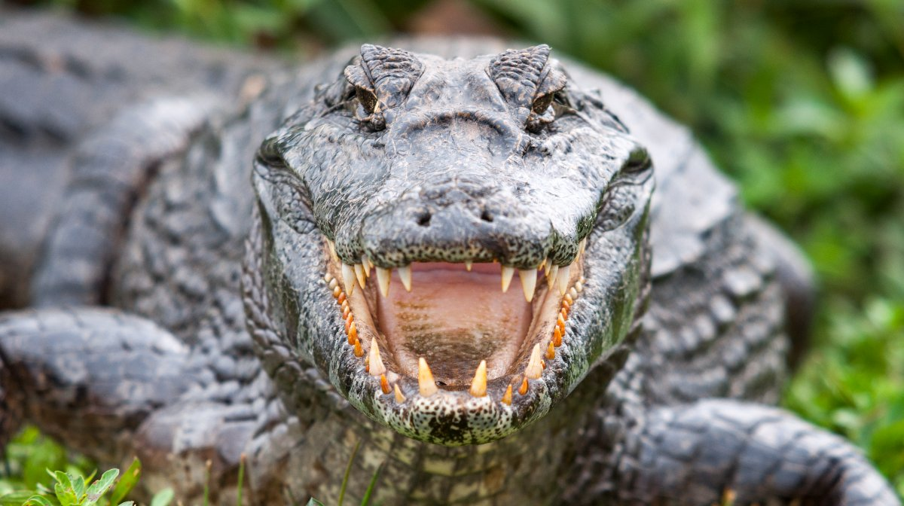

Caiman

Los caimanes son comunes en cualquier lugar donde haya agua incluyendo lagos, estanques, ríos, humedales, pantanos y canales artificiales. Aunque viven casi exclusivamente en agua dulce, también se han observado en aguas salobres y aguas marinas, los caimanes tienen un gran impacto ecológico por ser depredadores y porque a menudo excavan o se revuelcan para crear “agujeros de caimanes” que retienen agua durante los periodos secos.
Los ejemplares machos pueden llegar a medir de entre los 2 y 2,5 m de longitud y las hembras algo menos llegando tan solo a medir desde la punta de la cola hasta la boca 1,5 m.
El hocico de los caimanes son muy llamativos y tienen un tamaño angosto y largo del cual tienen en su interior un gran repertorio de dientes afilados que utilizan para desgarrar y devorar a sus presas.
Su metodología de casa es la de ser muy paciente, los caimanes esperan sin ningún tipo de prisa ni estresarte en las orillas de los pantanos y ríos dónde se encuentran esperando a que algún animal despistado se acerque lo suficiente como para poder hincarle el diente.
La alimentación de los caimanes al ser un animal carnívoro su dieta se compone a base de ingerir peces, moluscos y caracoles, otros pequeños mamíferos.
Los caimanes chinos rara vez superan los 25 kg, algo extraordinario si lo comparamos con el caimán americano que este puede llegar casi a los 500 kg sin ningún problema.
Pagina Principal